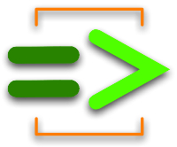

Having fun with ChucK

I couldn't wait until Rebecca's ISMIR tutorial on ChucK
- so I downloaded the latest ChucK distribution, fired it up and worked
through the reference guide. It's a lot of fun. ChucK is a
strongly-timed, concurrent, and on-the-fly audio programming language
that presents a time-based, concurrent programming model that's highly
precise and expressive. In some ways, ChucK reminds me of CSound
- in that you have lots of control over how to make sounds. The more
you know about signal processing and filters and the theory of synthesis
the more you can do with ChucK. But unlike CSound, ChucK is a modern
program language with classes, objects - all the things that make a Java
programmer comfortable, whereas CSound is like coding in assembler.
ChucK is pretty powerful too. Here's a bit of ChucK code by Perry Cook that does a reasonable job imitating the THX deep note - compare this 80 lines of code to the 20,000 lines of code required to make the original.
// THX emulator
// author: Perry R. Cook (Jan 8, 2007)
// modified: Ge Wang (added parameters up top)
// F-1, B1b, F1, B2b, F2, B3b, F3, A5, F4, A6
[ 29.0, 87.5, 116.0, 175.0, 233.0, 350.0, 524.0, 880.0, 1048, 1760,
29.0, 87.5, 116.0, 175.0, 233.0, 350.0, 524.0, 880.0, 1048, 1760,
29.0, 87.5, 116.0, 175.0, 233.0, 350.0, 524.0, 880.0, 1048, 1760
] @=> float targets[];
// storage
float initials[30];
float deltas[30];
// parameters (play with these to control timing)
10000 => int steady_samps;
20000 => int sweep_steps;
15000 => int hold_steps;
8000 => int decay_steps;
// UGens
SawOsc s[30];
Gain gl[30];
Gain gr[30];
JCRev rl => dac.left;
JCRev rr => dac.right;
// reverb settings
0.025 => rl.mix => rr.mix;
// variables
0 => int i => int j;
// compute stuff
for( 0 => i; i < 30; i++ )
{
// random freqs
Std.rand2f( 200.0, 800.0 ) => initials[i] => s[i].freq;
// 10 sample updates
( targets[i] - initials[i] ) / sweep_steps => deltas[i];
// initial gain
0.1 => s[i].gain;
// random
Std.rand2f( 0.0, 1.0 ) => gl[i].gain;
// panning
1.0 - gl[i].gain() => gr[i].gain;
// hook up
s[i] => gl[i] => rl;
// all the oscs
s[i] => gr[i] => rr;
}
steady_samps :: samp => now; // steady cluster
while( j < sweep_steps ) {
for( 0 => i; i < 30; i++ ) {
initials[i] + (deltas[i]*j) => s[i].freq; // sweep freqs.
}
j + 1 => j;
10 :: samp => now;
}
0 => j;
while( j < hold_steps ) { // hold chord
10 :: samp => now;
j + 1 => j;
}
0 => j;
while( j < decay_steps ) {
for( 0 => i; i < 30; i++) {
0.1 * (decay_steps-j) / decay_steps => s[i].gain; // decay gains
}
10 :: samp => now;
j + 1 => j;
}
60000 :: samp => now; // reverb tail